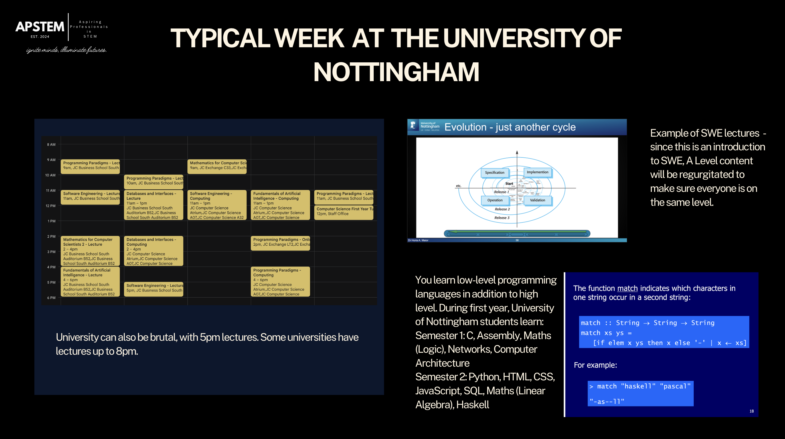
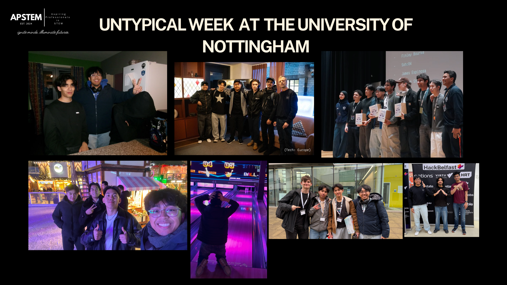

This webinar was about me and a few other panelists talking about our time with apprenticeships and university. I talked about my experience at the University of Nottingham, displaying some of the stuff that I did as well as the social parts of university, though I did not display the times I did karaoke at a potluck.
I was joined by Zaynah Alam (Swansea University doing a placement year at GE Aerospace & an incoming Citi Summer Analyst), Subhaan Mahmood (Degree Apprentice for Rolls-Royce) and Usamah Chowdhury (Previous apprentice in IT, incoming Amazon IT Associate II).
Here's a few pictures of my slides:
In my typical week, I usually go to lectures, go to labs, do coursework and work on personal projects.

My untypical weeks are usually more fun though. I've been to a few hackathons, as you can see with HackLondon, HackBelfast, {Tech: Europe}, and SotonHack. These are usually fun because of the FOOD, the people and the projects we usually come up with. Though some people get very jealous and you have to be wary and avoid them. How am I being told that myfriends teammate was genuinely crashing out because he didn't win? Then again, the really goated people with 10 different devices will never win, which is the truth.
